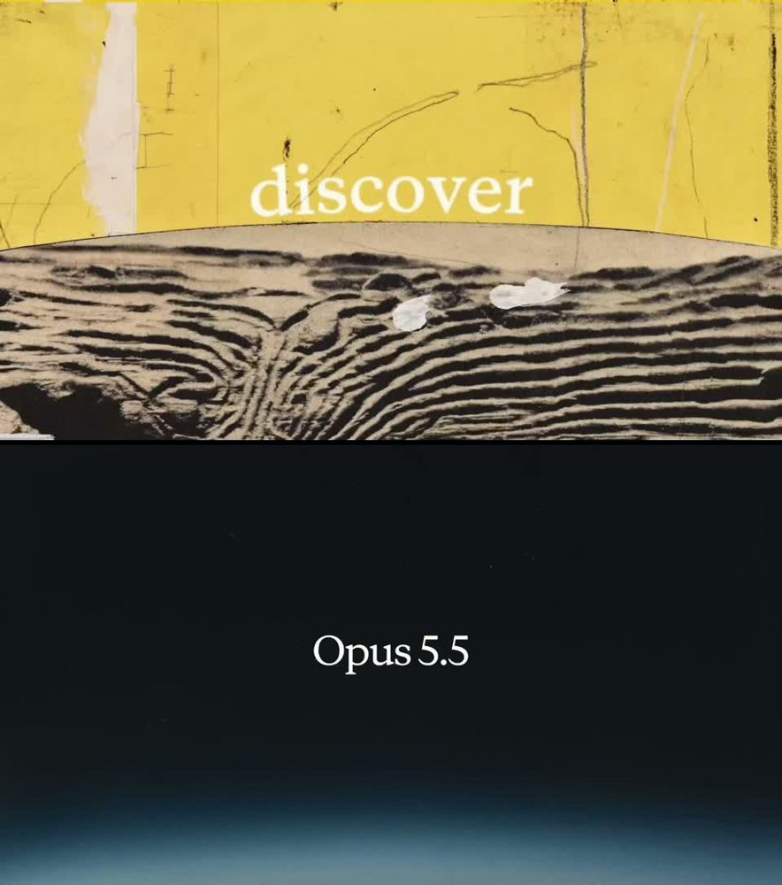
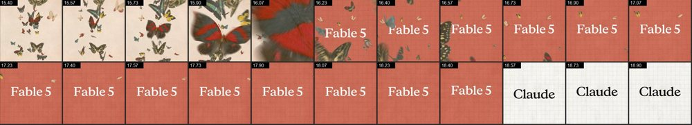

D · What it borrows, from the real films

Claude · Opus 5.5
A locked line while the world match-cuts underneath; music drops for the name.

Claude · Fable 5
Cuts accelerate to 0.12 s, then a hard stop in silence on one image.